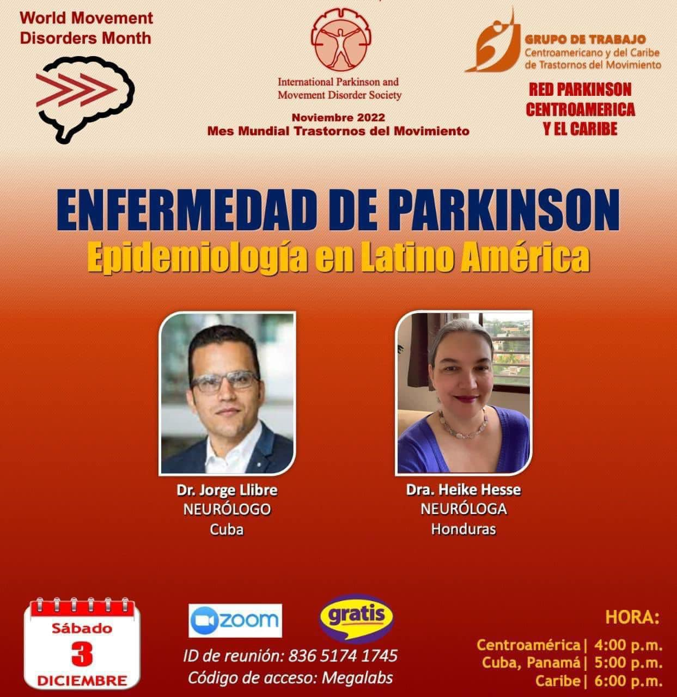
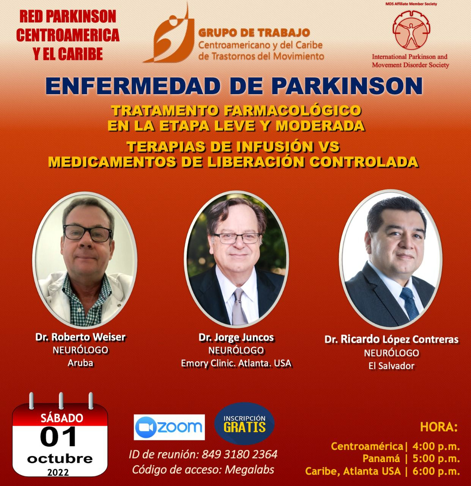

ASHPARK
Nuestros Eventos

Epidemiología del Parkinson: La epidemia que no se ve
En esta conferencia se hablará sobre el crecimiento del Parkinson en América Latina, los retos que enfrentan los pacientes y la necesidad urgente de generar mayor atención, conciencia y apoyo en la región.

Tratamientos farmacológico para el Parkinson
El tratamiento del Parkinson va mucho más allá de un solo medicamento. En esta charla abordaremos de forma clara y accesible los principales tratamientos farmacológicos que ayudan a controlar los síntomas de la enfermedad.

Sueños en pacientes con Parkinson
En esta charla se explorará cómo el Parkinson impacta el mundo del sueño, qué hay detrás de estas experiencias nocturnas, y cómo pacientes, familiares y profesionales pueden comprenderlas y manejarlas mejor.